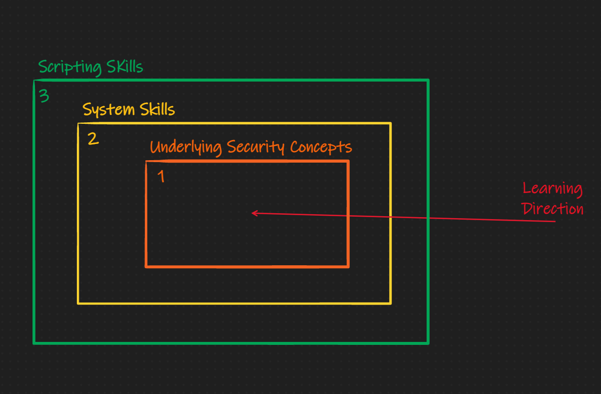
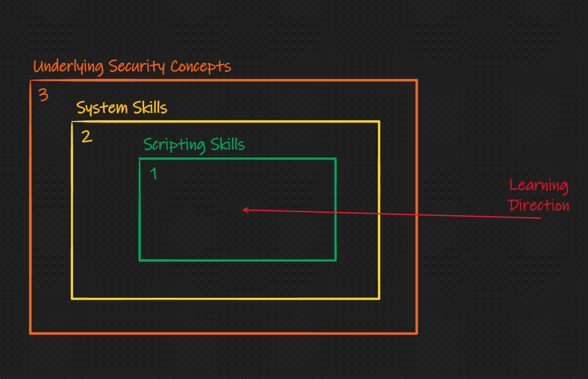

Background
The Education Gap
Over the course of my ever-evolving CTF career, I've seen various methods for getting started in hacking. There are the classic "getting started" guides (ex. this blog), and then there are the more novel interactive frameworks (ex. pwn.college). Many of my peers tend to lean more towards interactive experiences via CTFs, but there have also been sizable portions on the team that has not. In either case, I think there is a small but impactful knowledge gap when following an official "curriculum" instead of creating one yourself.
To help those cross the aforementioned gap, pwn.college was created. By investing time in pwn.college, one would ideally obtain their "yellow belt" in hacking, with the end result being a set of skills that will help you shape your own future learning curriculum. At this time, the Arizona State University class that uses the pwn.college framework (taught by Yan) for its curriculum is offered to those with an equivalent CS experience level of a "junior." In other words, the class expects you to know how to use Linux, understand C, binary properties ... and much more. If you are already lost, don't despair. I was in the same place as you when I started hacking. By reading this handbook and investing your time in growing your skillset, you should gain the necessary skills to take this "daunting" junior class.
The Target Audience
This handbook is targeted at anyone on or below the "junior in college" level of computer science, though even those individuals may find something useful from this handbook. This handbook is intended to give you all the material and direction you need to start pwn.college. After which, it is assumed you will continue your education with the pwn.college teaching platform. Learning from this handbook will have varying difficulty based on the reader. The people who will have the most efficient/easiest time learning from this handbook look like this:
- Comp. Sci. College Juniors
- Comp. Sci. College Freshmen/Sophomores
- High School Students
This of course assumes that you are in a college program that touches on systems (which it should). Things like C, debugging, memory management, operating systems. These things will make this experience much easier, but this handbook was made to help people who have not yet had the chance to take those types of classes (or don't have access to it). There the individuals who will learn/benefit the most from this is:
- High School Students
- Comp. Sci. College Freshmen/Sophomores
- Comp. Sci. College Juniors
In the end, many people can benefit from this, so feel free to go to exact sections if you think you have nothing to gain from the others; however, I do encourage everyone to at least skim each section since you may find some surprising tutorial/article I reference.
The Handbook's Novelty
As I briefly mentioned above, there exist many places to start practicing pwning and reversing, but not many that will explain the introductory concepts. As an example, taking a look at the Nightmare Book's style of teaching. It is layed out into chapters of exploitation techniques, which I like a lot. Each section is a writeup of how to solve a challenge that has the exploitation technique embedded in it. I think this method is extremely effective for learning for those with pre-established skills in Linux, C, and systems. I think this method fails for noobs who are just learning how C really works (on the memory level). In my brain, prepare for what animations look like in my brain, the learning barriers look like this:
Nightmare Method:

'Ike Method:

The subtle difference here is that I believe the underlying security concept should be educated and learned about through explicit material first, then it should be reinforced with scripting and systems skills. This is not to say I don't like the Nightmare method, I love it, but others need a different one. This book is that different method.